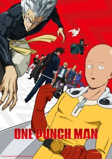
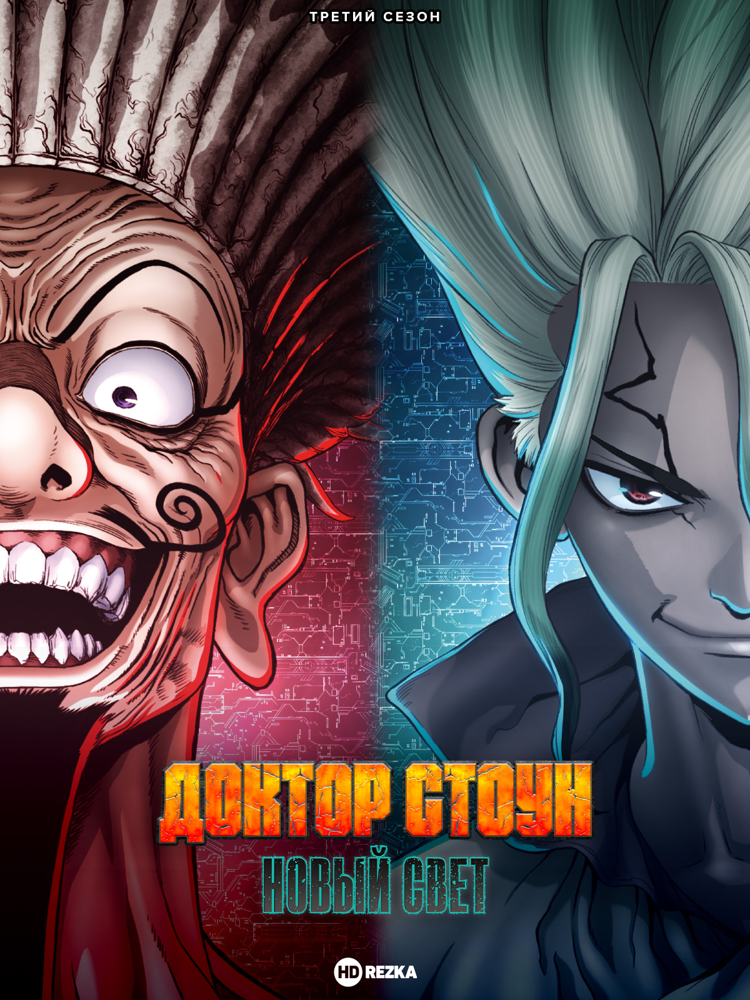
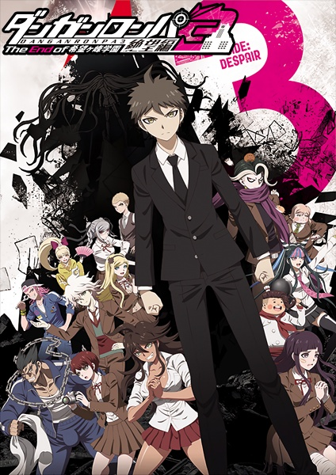
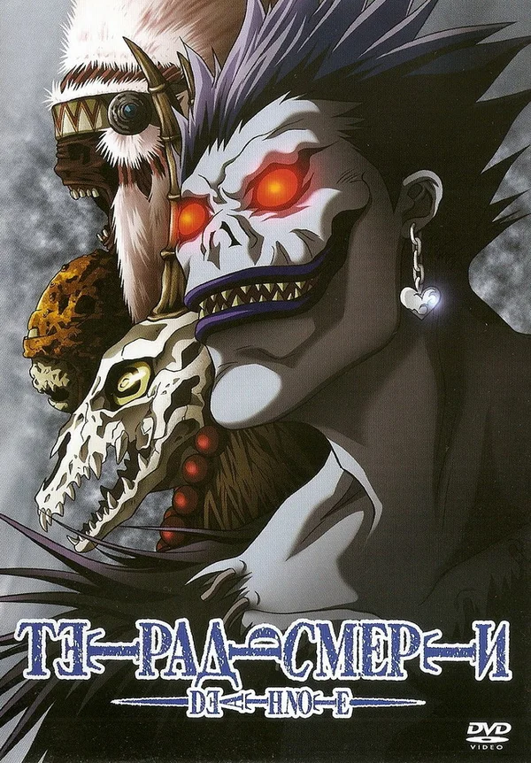
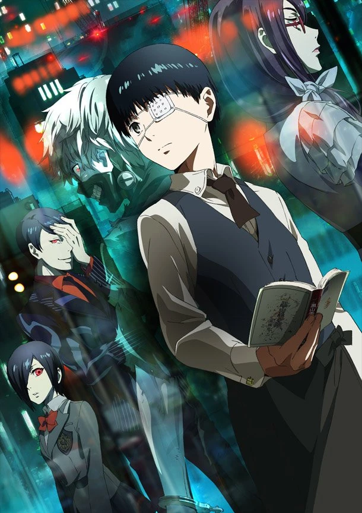

Жанры: боевик, комедия, повседневность и фантастика
Темы: пародия и суперсила
Годы выпуска: 2015, 2019.
Оригинальное название: One Punch Man
Возрастной рейтинг: 18+
Каково живётся самому сильному человеку в мире? Не так уж и классно, как может показаться на первый взгляд. Когда ты всего достиг, научившись выносить злодеев буквально с одного удара, жизнь теряет краски, пропадает сам интерес к жизни, ведь не к чему стремиться. С подобным внутренним кризисом сталкивается Сайтама - самый сильный человек на планете, погрязший в рутине и потерявший радость от побед над монстрами и преступниками. Его знакомство с киборгом Геносом открывает Сайтаме новый мир супергероев - друзья записываются в супергеройскую ассоциацию, чтобы от имени правосудия бороться со злом, однако сильнейшему в мире всё так же скучно…

Жанры: приключения, комедия и фантастика.
Тема: сёнен.
Годы выпуска: 2019, 2021, 2023.
Оригинальное название: Dr. Stone
Возрастной рейтинг: 16+
В один ужасный день всему человечеству пришёл конец, ведь на небе появился мистический разлом. В момент появления неизвестного феномена все люди начали превращаться в каменные статуи от зелёных лучей. Никто не успел понять, что происходит вокруг. Прошло около трёх тысячелетий после ужасного случая и мир превратился в доисторический. Все здания были покрыты лианами, и город стал копией настоящих джунглей. Тайджи Оки пробудился от каменного сна и обнаружил вокруг себя лишь статуи. Парень имеет крепкое тело и слабые познания в науке, но он не впал в уныние и начал поиски оживших людей. Ему крупно повезло, ведь вскоре юноша встретил своего лучшего друга Сэнку Ишигами, который пробудился на полгода раньше. Подросток обладал уникальным мышлением и огромными знаниями, а потому от момента пробуждение преуспел в своих исследованиях. Он не только построил дом на дереве, но и создал примитивную лабораторию, в которой трудится каждый день. Ребята объединили силы, чтобы найти способ оживить всё окаменевшее человечество.

Жанры: повседневность, детектив и психология.
Темы: ужасы и школа.
Годы выпуска: 2013, 2016.
Оригинальное название: Danganronpa: Kibou no Gakuen to Zetsubou no Koukousei The Animation
Возрастной рейтинг: 18+
Каждый подросток мечтает после старшей школы поступить в элитную академию и получить достойные знания. В стране существует академия "Пик Надежды", которая является самой лучшей среди всех остальных. Вот только проблема состоит в том, что поступить в это учебное заведение крайне тяжело. Макото Наэги поставил перед собой весьма сложную миссию, и она заключалась в поступлении в "Пик Надежды". Мальчишка ответственно отнёсся к учёбе, и в результате ему удалось добиться мечты. После того как пришло пригласительное письмо с академии парень тут же отправился туда. Первое что удивило Макото так это пустые коридоры и мистическая тишина. Школьнику пришлось долго ходить по коридорам пока он не нашёл главный зал, где обнаружил пятнадцать таких же растерянных учеников. В одно мгновение перед всей аудиторией появился странный плюшевый мишка, который поведал ребятам о правилах академии. Оказалось, что это необычное учебное заведение и выбраться отсюда очень тяжело. Условия для всех учеников были одинаковыми - это убийство одного из одноклассников. К сожалению, странный мишка не шутил, и теперь ребят ждут ужасные задания, а также мерзкие испытания.
Оригинальное название: Naruto
Возрастной рейтинг: 18+
Познакомьтесь с Наруто Узумаки – юным ниндзя, которому предстоит пройти долгий путь к своей мечте. Однако для достижения любой цели нужны верные товарищи, которых Наруто предстоит обрести. Эта история о том, как найти в себе силы не сдаваться, когда никто вокруг не верит в успех. А ещё это исключительная и неповторимая в своём роде классика – самое занимательное приключение ниндзя всех времён!

Жанры: мистика, детектив, триллер и психология.
Темы: полиция и сёнен.
Год выпуска: 2006.
Оригинальное название: Death Note
Возрастной рейтинг: 18+
Жить человеку или не жить определяют боги смерти, рано или поздно внося его имя в особую тетрадь. Одна из таких тетрадей попадает в мир людей на территорию современной Японии. А что случится, если тетрадь бога Death Note окажется в руках человека? Ответ очевиден: он возомнит себя богом. Это и происходит с Ягами Лайтом - среднестатистическим, но не совсем обычным старшеклассником, мечтающим построить утопию на трупах преступников.
«Тетрадь Смерти» обрела невероятную популярность в начале века онлайн, сделав историю противостояния Киры и гениального детектива L классикой детективного жанра и просто культовым аниме.

Жанры: боевик, драма, фантастика и триллер.
Тема: ужасы.
Годы выпуска: 2014, 2015, 2018.
Оригинальное название: Tokyo Ghoul
Возрастной рейтинг: 18+
Япония, альтернативная реальность. В этом мире параллельно с людьми существует раса гулей - созданий, стоящих выше людей в пищевой цепи, то есть людоедов. Тем не менее, людям удаётся сосуществовать с ними в относительном мире, однако стычки время от времени случаются. Под такую раздачу попадает обычный школьник Канеки, который становится жертвой могущественной женщины-гуля. Чудом пережив нападение, Канеки узнаёт, что взамен утраченных человеческих органов ему пересадили органы гуля. Кто же он теперь - человек или гуль? Ему предстоит пройти долгий путь самоопределения и найти своё место в мире.

Жанр: приключения.
Темы: сёнен и спорт.
Год выпуска: 2022.
Оригинальное название: Blue Lock
Возрастной рейтинг: 16+
Чиновники Японии обеспокоены тем, что сборная страны по футболу в очередной раз проиграла чемпионат мира. Репутация Японии под угрозой, а потому чиновники решают нанять эксцентричного тренера Дзимпати Эго, который способен решить проблему. Дзимпати создаёт секретный проект "Блю Лок", в котором будут принимать участие триста лучших нападающих Японии. Одним из знаменитых участников стал Ёити Исаги. Спортсмен озабочен лишь одной целью, а именно стать лучшим в мире игроком. Вот только в последней игре мальчишка допустил фатальную ошибку. Исаги понадеялся на партнёра, но тот не забил мяч в ворота. Ёити придерживался правил командной игры, что повлекло за собой поражение в матче. После провальной игры юноша получил приглашение от неизвестной компании. В унылом состоянии футболист отправился на собеседование, но оказалось, что он попал в секретный проект "Блю Лок". Согласившись на все условия, подросток стал участником необычного эксперимента, в конце которого останется лишь один победитель.

Жанры: комедия и романтика.
Тема: школа.
Годы выпуска: 2017, 2022, 2024.
Оригинальное название: Youkoso Jitsuryoku Shijou Shugi no Kyoushitsu e
Возрастной рейтинг: 16+
В данный момент выходят новые серии (онгоинг).
Старшая школа Кодо Икусэй – престижное учебное заведение с весьма неплохими показателями, где каждый ученик после выпуска гарантированно поступает в самый престижный институт и сможет найти работу.
Ученикам дозволено ходить как они того пожелают: с любыми прическами, в любом виде, приносить с собой свои личные вещи. Каждому ученику при поступлении начисляют 100 очков (100000 йен), на которые они обязаны жить. Очки начисляются каждый месяц. На первый взгляд Кодо Икусэй – рай для любого ученика, но не так всё просто было. Очки начисляются за успеваемость в учебе, и в зависимости от ранга класса. В школе существует так называемая “эс-система”, по которой классы распределяются на ранги, по типу: D, C, B, A

Жанры: боевик и мистика.
Темы: демоны, историческое и сёнен.
Годы выпуска: 2019, 2021, 2023.
Оригинальное название: Kimetsu no Yaiba
Возрастной рейтинг: 18+
Ходят слухи, что в местных лесах обитают кровожадные демоны, которые питаются человеческой плотью. Вот только последние инциденты были так давно, что люди позабыли об опасностях дремучих лесов. Многие жители деревни считают, что сказание о демонах это просто страшилки и легенды. Танджиро Камадо живёт в маленькой деревушке, и он заботится о своей семье, ведь недавно исчез отец. Парню приходится работать на шахте и продавать уголь в городе. Очередная поездка на рынок не сулила неприятностей, но по возвращении домой парня ожидало чудовищное зрелище. Камадо увидел окровавленные тела родственников, которые были разбросаны во дворе. Оказалось, что лесные демоны напали на деревню и вырезали всех жителей. Чудом удалось выжить сестрёнке Нэзуко, но и у неё были проблемы, ведь существа превратили её в демона.